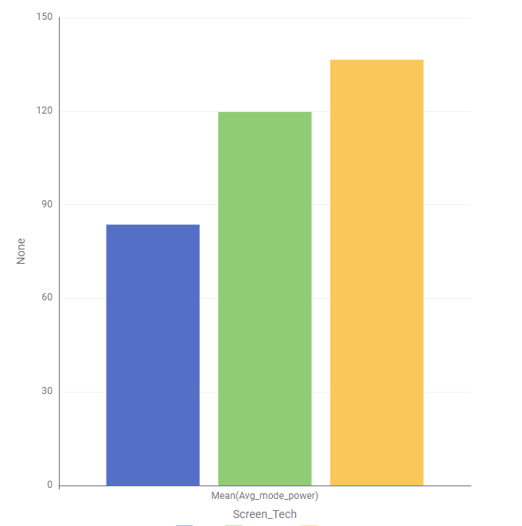
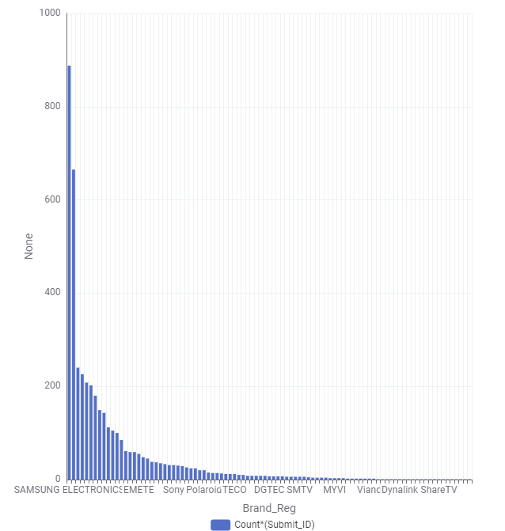

This section provides visual insights into energy use trends for televisions sold in the Australian market. These visualisations help highlight patterns in screen technology, brand efficiency, and power consumption.
This chart above shows the amount of television screen technology that is purchased by the people of Australia. According to the survey, majority of the people own a LED screen TV at home and the least would be the new technology of OLED.
This chart shows the relationship between average energy consumption and screen technology. It highlights that LED screens are generally more energy-efficient compared to other technologies.
This chart shows the number of television units registered under each brand. It highlights the popularity of different TV brands in the dataset, with brands like Samsung and LG leading in ownership among consumers.
These charts support our analysis of screen types, screen sizes, and brand power usage, which are essential for making energy-conscious purchase decisions.